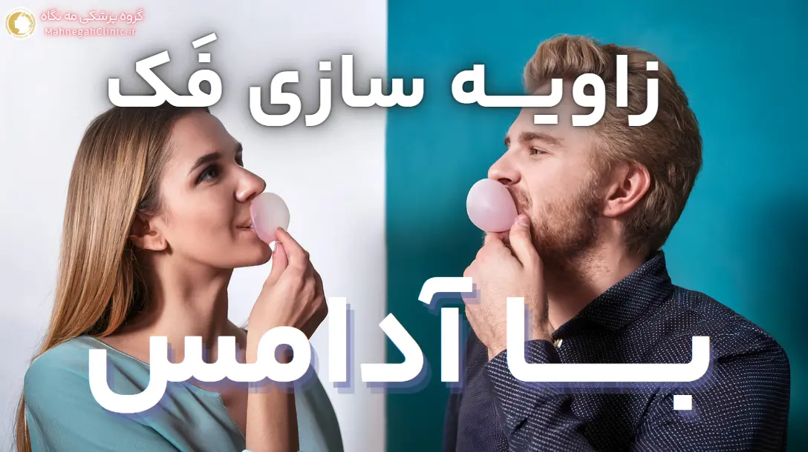
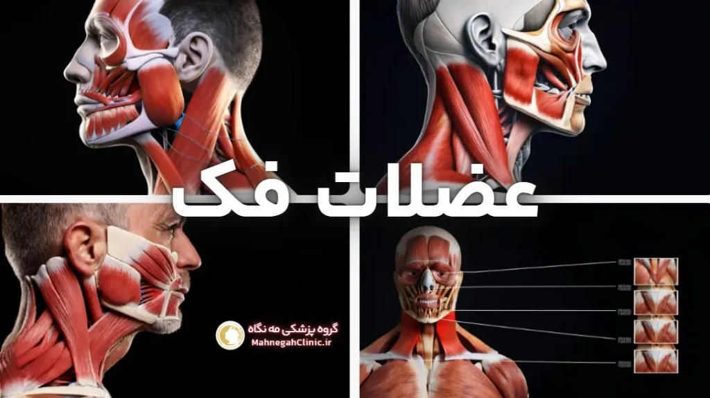
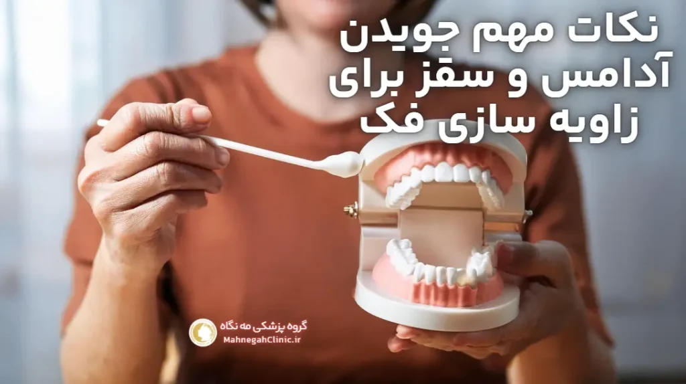
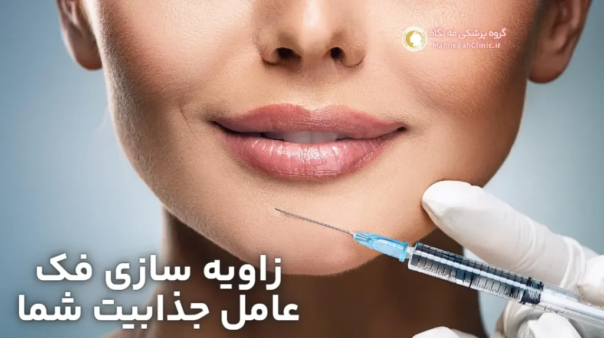

خانه / مجله / زاویه سازی فک
زاویه سازی فک با آدامس یا سقز - واقعیت یا شایعه؟

زاویه سازی فک با آدامس یا سقز: واقعیت یا افسانه؟
آیا تا به حال شنیدهاید که جویدن آدامس یا سقز میتواند به زاویه سازی فک و داشتن صورتی خوشتراش کمک کند؟ 🤔
این ادعا در بین بسیاری از افراد، به خصوص در شبکههای اجتماعی، رواج دارد. اما آیا واقعیت دارد یا صرفاً یک افسانه است؟
در این مقاله به بررسی این موضوع میپردازیم و تاثیر جویدن آدامس یا سقز بر زاویه سازی فک را از نظر علمی بررسی میکنیم.
ادعاهای رایج در مورد زاویه سازی فک با آدامس
- تقویت عضلات فک: برخی معتقدند که جویدن مداوم آدامس یا سقز باعث تقویت عضلات جونده و در نتیجه، برجستهتر شدن خط فک میشود.
- کاهش چربی صورت: برخی دیگر ادعا میکنند که جویدن آدامس به سوزاندن کالری و کاهش چربی صورت کمک میکند و در نتیجه، فک را زاویهدارتر نشان میدهد.
- بهبود تقارن صورت: برخی افراد بر این باورند که جویدن آدامس به طور متعادل در هر دو طرف صورت، میتواند به بهبود تقارن فک و صورت کمک کند.
آیا جویدن آدامس یا سقز واقعاً میتواند فک را زاویهدار کند؟
اگرچه جویدن آدامس یا سقز میتواند عضلات جونده را تا حدی تقویت کند، اما تاثیر آن بر زاویه سازی فک بسیار محدود است.
شکل و ساختار فک عمدتاً توسط ژنتیک و استخوانها تعیین میشود و عضلات نقش کمتری در آن دارند. همچنین، کاهش چربی صورت با جویدن آدامس بسیار ناچیز است و نمیتواند به تنهایی باعث زاویه سازی قابل توجه فک شود.
بنابراین، اگرچه جویدن آدامس یا سقز میتواند به عنوان یک ورزش ملایم برای عضلات فک مفید باشد و به طور غیرمستقیم به بهبود ظاهر فک کمک کند، اما نمیتوان آن را به عنوان یک روش موثر و قطعی برای زاویه سازی فک در نظر گرفت.
برای دستیابی به نتایج چشمگیر و ماندگار، بهتر است از روشهای پزشکی مانند تزریق فیلر یا جراحی استفاده کنید یا با یک متخصص زیبایی مشورت کنید.
تاثیر جویدن آدامس بر عضلات فک و صورت
جویدن آدامس یا سقز، فعالیتی است که عضلات مختلفی در فک و صورت را درگیر میکند.
این فعالیت میتواند به تقویت این عضلات و بهبود عملکرد آنها کمک کند، اما آیا تأثیر قابل توجهی بر زاویه سازی فک دارد؟
عضلات درگیر در جویدن و نقش آنها در شکل فک
- عضلات جونده (Masseter Muscles): این عضلات اصلی مسئول جویدن هستند و در دو طرف فک قرار دارند. تقویت این عضلات میتواند به برجستهتر شدن خط فک کمک کند، اما تأثیر آن بر زاویه فک محدود است.
- عضلات گیجگاهی (Temporalis Muscles): این عضلات در دو طرف سر، بالای گوشها قرار دارند و به حرکت فک در هنگام جویدن کمک میکنند. تقویت این عضلات تأثیر مستقیمی بر زاویه فک ندارد.
- عضلات پتریگوئید داخلی و خارجی (Medial and Lateral Pterygoid Muscles): این عضلات در داخل فک قرار دارند و به حرکت فک به طرفین و جلو و عقب کمک میکنند. تقویت این عضلات نیز تأثیر مستقیمی بر زاویه فک ندارد.

تقویت عضلات فک با جویدن آدامس: تا چه حد ممکن است؟
جویدن آدامس یا سقز میتواند به تقویت عضلات جونده کمک کند، اما این تقویت معمولاً در حدی نیست که باعث تغییر قابل توجه در شکل و زاویه فک شود. برای اینکه عضلات به طور قابل توجهی رشد کنند و تغییر شکل دهند، نیاز به تمرینات مقاومتی و وزنهای دارند که در جویدن آدامس یا سقز وجود ندارد.
علاوه بر این، شکل و زاویه فک عمدتاً توسط ساختار استخوانی و ژنتیک تعیین میشود و عضلات نقش کمتری در آن دارند.
بنابراین، حتی اگر عضلات جونده را به طور قابل توجهی تقویت کنید، ممکن است تغییر چشمگیری در زاویه فک خود مشاهده نکنید.
به طور خلاصه، جویدن آدامس یا سقز میتواند به عنوان یک ورزش ملایم برای عضلات فک مفید باشد و به طور غیرمستقیم به بهبود ظاهر فک کمک کند، اما نمیتوان آن را به عنوان یک روش موثر برای زاویه سازی فک در نظر گرفت.
محدودیتهای زاویه سازی فک با آدامس یا سقز
با وجود ادعاهای رایج در مورد تاثیر جویدن آدامس یا سقز بر زاویه سازی فک، این روش با محدودیتهای قابل توجهی روبرو است که باید در نظر گرفته شوند.
عوامل ژنتیکی و ساختار استخوانی
- ژنتیک: شکل و اندازه فک عمدتاً توسط ژنتیک تعیین میشود. اگرچه ورزش و سایر روشها میتوانند تا حدی بر ظاهر فک تأثیر بگذارند، اما نمیتوانند ساختار استخوانی را تغییر دهند. بنابراین، اگر فک شما به طور طبیعی کوچک یا ضعیف است، جویدن آدامس به تنهایی نمیتواند آن را به طور قابل توجهی تغییر دهد.
- ساختار استخوانی: علاوه بر ژنتیک، ساختار استخوانی فک نیز در تعیین شکل و زاویه آن نقش دارد. برخی افراد دارای استخوان فک برجستهتری هستند، در حالی که برخی دیگر فک صافتری دارند. جویدن آدامس نمیتواند ساختار استخوانی فک را تغییر دهد.
نقش چربی صورت در ظاهر فک
- چربی زیرپوستی: چربی زیرپوستی در ناحیه صورت و گردن میتواند خط فک را پنهان کند و باعث شود فک کمتر مشخص و زاویهدار به نظر برسد. کاهش وزن و از دست دادن چربی میتواند به بهبود ظاهر فک کمک کند، اما جویدن آدامس به تنهایی تأثیر چندانی بر کاهش چربی صورت ندارد.
- تجمع چربی در ناحیه غبغب: غبغب میتواند باعث شود فک کمتر مشخص شود و ظاهری گرد و نامشخص به چهره بدهد. اگرچه ورزشهای خاص میتوانند به تقویت عضلات گردن و کاهش غبغب کمک کنند، اما جویدن آدامس به تنهایی نمیتواند این مشکل را برطرف کند.
به طور خلاصه، جویدن آدامس یا سقز نمیتواند به طور قابل توجهی بر عوامل ژنتیکی، ساختار استخوانی و چربی صورت که تعیین کننده اصلی شکل و زاویه فک هستند، تأثیر بگذارد. بنابراین، اگر به دنبال تغییرات اساسی در ظاهر فک خود هستید، بهتر است به روشهای پزشکی مانند تزریق فیلر یا جراحی مراجعه کنید.
مزایای جویدن آدامس یا سقز برای سلامت دهان و دندان
اگرچه جویدن آدامس یا سقز نمیتواند به طور مستقیم به زاویه سازی فک کمک کند، اما میتواند فواید قابل توجهی برای سلامت دهان و دندان داشته باشد. در ادامه به برخی از این مزایا میپردازیم:
افزایش تولید بزاق و کاهش پوسیدگی دندان
- تحریک تولید بزاق: جویدن آدامس یا سقز باعث تحریک غدد بزاقی و افزایش تولید بزاق میشود. بزاق نقش مهمی در شستشوی ذرات غذا و باکتریها از سطح دندانها دارد و به حفظ pH طبیعی دهان کمک میکند.
- کاهش پوسیدگی دندان: با افزایش تولید بزاق و خنثیسازی اسیدهای تولید شده توسط باکتریها، جویدن آدامس بدون قند میتواند به کاهش خطر پوسیدگی دندان کمک کند.
- تقویت مینای دندان: برخی آدامسها حاوی مواد معدنی مانند کلسیم و فسفات هستند که میتوانند به تقویت مینای دندان و جلوگیری از فرسایش آن کمک کنند.
بهبود سلامت لثهها
- ماساژ لثهها: جویدن آدامس به ماساژ ملایم لثهها کمک میکند و باعث افزایش جریان خون در آنها میشود. این امر میتواند به بهبود سلامت لثهها و جلوگیری از بیماریهای لثه کمک کند.
- کاهش پلاک دندان: جویدن آدامس میتواند به حذف پلاکهای دندانی که در نواحی صعبالعبور بین دندانها تجمع مییابند، کمک کند و در نتیجه، خطر بیماریهای لثه را کاهش دهد.
سایر مزایای جویدن آدامس یا سقز برای سلامت دهان و دندان:
- خوشبو کننده دهان: جویدن آدامس میتواند به طور موقت بوی بد دهان را از بین ببرد و احساس تازگی و طراوت در دهان ایجاد کند.
- کاهش استرس: برخی مطالعات نشان دادهاند که جویدن آدامس میتواند به کاهش استرس و اضطراب کمک کند.
- بهبود تمرکز: جویدن آدامس میتواند به بهبود تمرکز و هوشیاری کمک کند.
با این حال، برای بهرهمندی از این مزایا، مهم است که از آدامسهای بدون قند استفاده کنید و از جویدن بیش از حد آدامس که میتواند باعث مشکلات فک و مفصل گیجگاهی فکی (TMJ) شود، خودداری کنید.

نکات مهم در استفاده از آدامس یا سقز برای تقویت فک
اگرچه جویدن آدامس یا سقز نمیتواند به تنهایی باعث زاویه سازی قابل توجه فک شود، اما با رعایت برخی نکات میتوان از فواید آن برای تقویت عضلات فک و سلامت دهان و دندان بهرهمند شد.
انتخاب آدامس یا سقز مناسب
- آدامس بدون قند: برای جلوگیری از پوسیدگی دندانها و افزایش تولید بزاق، حتماً از آدامسهای بدون قند استفاده کنید.
- سقز طبیعی: اگر سقز را ترجیح میدهید، مطمئن شوید که از سقز طبیعی و بدون افزودنیهای مصنوعی استفاده میکنید.
- آدامسهای حاوی زایلیتول: زایلیتول یک شیرینکننده طبیعی است که میتواند به کاهش باکتریهای دهان و جلوگیری از پوسیدگی دندان کمک کند.
- آدامسهای با طعم نعناع یا دارچین: این طعمها میتوانند به خوشبو کردن دهان و افزایش تولید بزاق کمک کنند.
مدت زمان و شدت جویدن
- حداقل 15-20 دقیقه در روز: برای تقویت عضلات فک، آدامس یا سقز را حداقل 15-20 دقیقه در روز بجوید.
- جویدن متعادل در هر دو طرف: برای جلوگیری از عدم تقارن در عضلات فک، سعی کنید آدامس را به طور متعادل در هر دو طرف دهان بجوید.
- شدت متوسط: از جویدن بیش از حد شدید یا طولانی مدت خودداری کنید، زیرا میتواند باعث درد فک یا مشکلات مفصل گیجگاهی فکی (TMJ) شود.
- استراحت: به عضلات فک خود استراحت دهید و از جویدن مداوم آدامس یا سقز برای مدت طولانی خودداری کنید.
سایر نکات:
- رعایت بهداشت دهان و دندان: جویدن آدامس یا سقز نمیتواند جایگزین مسواک زدن و نخ دندان کشیدن شود. حتماً بهداشت دهان و دندان خود را به طور منظم رعایت کنید.
- مشاوره با دندانپزشک: اگر سابقه مشکلات فک یا دندان دارید، قبل از شروع جویدن آدامس یا سقز با دندانپزشک خود مشورت کنید.
- توجه به علائم هشدار دهنده: اگر در حین یا پس از جویدن آدامس یا سقز احساس درد، حساسیت یا ناراحتی در فک یا دندانهای خود کردید، جویدن را متوقف کنید و با دندانپزشک خود مشورت کنید.
با رعایت این نکات، میتوانید از مزایای جویدن آدامس یا سقز برای تقویت عضلات فک و سلامت دهان و دندان خود بهرهمند شوید، بدون اینکه به فک یا دندانهای خود آسیب برسانید.

جایگزینهای موثر برای زاویه سازی فک
اگرچه جویدن آدامس یا سقز میتواند به عنوان یک مکمل برای تقویت عضلات فک مفید باشد، اما برای دستیابی به نتایج چشمگیر و ماندگار در زاویه سازی فک، روشهای دیگری نیز وجود دارند که میتوانند جایگزینهای موثرتری باشند. این روشها به دو دسته اصلی تقسیم میشوند:
روشهای غیرجراحی (تزریق فیلر، بوتاکس)
- تزریق فیلر: این روش محبوب و کمتهاجمی شامل تزریق مواد پرکننده مانند اسید هیالورونیک در نقاط استراتژیک فک است. فیلر باعث افزایش حجم و تعریف خط فک میشود و نتایج آن بلافاصله قابل مشاهده است. این روش معمولاً نیازی به بیحسی ندارد و دوره نقاهت کوتاهی دارد.
- تزریق بوتاکس: در برخی موارد، بوتاکس میتواند برای شل کردن عضلات بزرگ فک (ماستر) استفاده شود که باعث میشود فک باریکتر و ظریفتر به نظر برسد. این روش نیز غیرجراحی و کمتهاجمی است و نتایج آن معمولاً پس از چند روز قابل مشاهده است.
- لیفت با نخ: در این روش، نخهای مخصوصی در زیر پوست قرار داده میشوند تا پوست و بافتهای صورت را لیفت کنند و به بهبود خط فک کمک کنند. این روش نیز غیرجراحی است و نتایج آن فوری هستند، اما ماندگاری آنها نسبت به تزریق فیلر کمتر است.
روشهای جراحی (ایمپلنت، استئوتومی)
- جراحی ایمپلنت فک: در این روش، ایمپلنتهای جامد از جنس سیلیکون یا مواد دیگر در فک قرار داده میشوند تا حجم و برجستگی آن را افزایش دهند. این روش جراحی نیاز به بیهوشی عمومی دارد و دوره نقاهت آن طولانیتر است، اما نتایج آن دائمی هستند.
- جراحی استئوتومی فک: در این روش، استخوان فک برش داده شده و تغییر شکل داده میشود تا زاویه و برجستگی آن بهبود یابد. این روش جراحی پیچیدهتر است و نیاز به بیهوشی عمومی و دوره نقاهت طولانیتری دارد، اما نتایج آن نیز دائمی هستند.
انتخاب بین روشهای غیرجراحی و جراحی به عوامل مختلفی مانند اهداف زیبایی، بودجه، تحمل درد و زمان بهبودی مورد نظر بستگی دارد. مشاوره با یک پزشک متخصص میتواند به شما در انتخاب بهترین گزینه کمک کند.
مشاوره با متخصص: بهترین راه برای تصمیمگیری آگاهانه
تصمیمگیری در مورد زاویه سازی فک، چه با روشهای طبیعی و چه با روشهای پزشکی، نیازمند اطلاعات دقیق و آگاهی از مزایا، معایب و محدودیتهای هر روش است. در این مسیر، مشاوره با یک متخصص زیبایی یا جراح فک و صورت میتواند به شما کمک کند تا بهترین تصمیم را برای خود بگیرید.
اهمیت مشاوره با پزشک یا دندانپزشک
- ارزیابی تخصصی: یک متخصص با بررسی دقیق آناتومی صورت، ساختار استخوانی، میزان چربی و سایر عوامل، میتواند به شما بگوید که آیا زاویه سازی فک با ورزش و روشهای طبیعی برای شما مناسب است یا خیر.
- تعیین اهداف واقعبینانه: متخصص به شما کمک میکند تا انتظارات واقعبینانهای از نتایج هر روش داشته باشید و از ناامیدی و نارضایتی جلوگیری کنید.
- بررسی روشهای جایگزین: اگر ورزش و روشهای طبیعی برای شما مناسب نباشند، متخصص میتواند روشهای پزشکی جایگزین مانند تزریق فیلر یا جراحی را به شما معرفی کند و مزایا و معایب هر یک را توضیح دهد.
- پاسخ به سوالات و نگرانیها: شما میتوانید در جلسه مشاوره، تمام سوالات و نگرانیهای خود را در مورد زاویه سازی فک با متخصص در میان بگذارید و از او راهنمایی بخواهید.
ارزیابی شرایط فردی و پیشنهاد بهترین روش
- آناتومی صورت: متخصص با بررسی آناتومی صورت شما، میتواند بهترین روش را برای زاویه سازی فک شما پیشنهاد دهد. برای مثال، اگر عدم تقارن فک شما ناشی از ساختار استخوانی است، ممکن است جراحی تنها گزینه موثر باشد.
- اهداف زیبایی: متخصص با در نظر گرفتن اهداف زیبایی شما، روشی را پیشنهاد میدهد که به بهترین نحو به این اهداف دست یابید.
- بودجه: هزینههای روشهای مختلف زاویه سازی فک متفاوت است. متخصص میتواند با توجه به بودجه شما، گزینههای مناسبی را پیشنهاد دهد.
- ترجیحات شخصی: برخی افراد روشهای غیرجراحی را ترجیح میدهند، در حالی که برخی دیگر به دنبال نتایج دائمیتر هستند و جراحی را انتخاب میکنند. متخصص با در نظر گرفتن ترجیحات شما، بهترین روش را پیشنهاد خواهد کرد.
در گروه پزشکی مه نگاه، ما مشاوره رایگان را برای تمامی خدمات زیبایی و درمانی خود، از جمله زاویه سازی فک، ارائه میدهیم. متخصصان ما با صبر و حوصله به سوالات شما پاسخ میدهند و شما را در انتخاب بهترین روش برای دستیابی به زیبایی و اعتماد به نفس بیشتر یاری میکنند. برای رزرو نوبت مشاوره رایگان، همین حالا با ما تماس بگیرید.
سوالات متداول در مورد زاویه سازی فک با آدامس یا سقز
در این بخش، به برخی از سوالات رایج در مورد زاویه سازی فک با آدامس یا سقز پاسخ میدهیم تا ابهامات شما را برطرف کنیم و به شما در تصمیمگیری بهتر کمک کنیم.
جویدن آدامس میتواند عضلات جونده (ماستر) را تا حدی تقویت کند و باعث افزایش حجم آنها شود. با این حال، این افزایش حجم معمولاً بسیار جزئی است و تأثیر قابل توجهی بر زاویه فک ندارد. برای دستیابی به تغییرات قابل توجه در اندازه عضلات، نیاز به تمرینات مقاومتی و وزنهای دارید.
جویدن سقز نیز مانند آدامس میتواند عضلات جونده را تقویت کند، اما تأثیر آن بر زاویه سازی فک مشابه آدامس است و نمیتواند تغییرات اساسی در شکل فک ایجاد کند. مهمترین نکته در انتخاب بین آدامس و سقز، ترجیح شخصی و دسترسی به محصول طبیعی و بدون افزودنیهای مصنوعی است.
خیر، جویدن آدامس یا سقز نمیتواند جایگزین روشهای پزشکی مانند تزریق فیلر یا جراحی برای زاویه سازی فک شود. این روشها میتوانند نتایج سریعتر، قابل پیشبینیتر و ماندگارتری را ارائه دهند، به خصوص اگر به دنبال تغییرات اساسی در شکل فک خود هستید یا دچار ناهنجاریهای فک هستید.
جویدن آدامس یا سقز به طور کلی بیخطر است، اما در صورت زیادهروی یا استفاده نادرست میتواند باعث مشکلات فک و مفصل گیجگاهی فکی (TMJ) شود. همچنین، مصرف آدامسهای حاوی قند میتواند به پوسیدگی دندانها منجر شود.
تأثیر جویدن آدامس یا سقز بر عضلات فک بسیار تدریجی است و ممکن است چند ماه طول بکشد تا تغییرات جزئی را مشاهده کنید. همچنین، این تغییرات ممکن است برای همه افراد قابل توجه نباشند.
اگر سوالات بیشتری در مورد زاویه سازی فک با آدامس یا سقز دارید، یا به دنبال راههای موثرتر برای دستیابی به زاویه فک دلخواه خود هستید، میتوانید با ما تماس بگیرید و از مشاوره رایگان متخصصان ما بهرهمند شوید. 👇